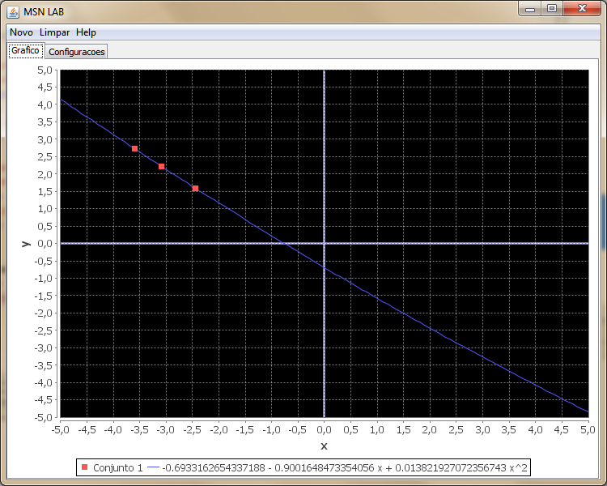
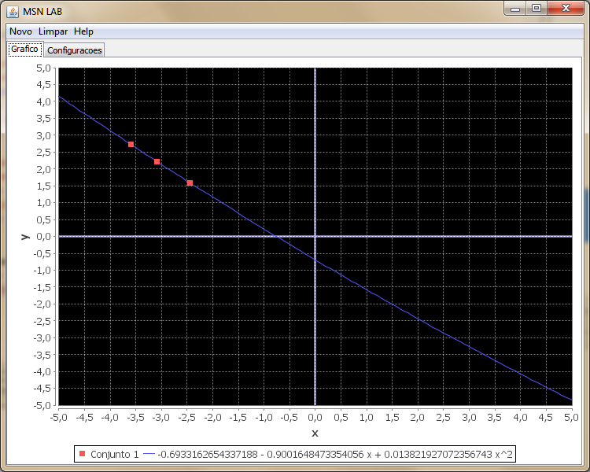

Estabeleça um conjunto de pontos na aba de Configurações.

Clique em Novo -> Interpolação -> Aproximação Polinomial -> Método de Lagrange

O resultado será exposto no gráfico como podemos ver na imagem a seguir:

O método de Lagrange é usado para resolução de equaçõess diferenciais ordinárias lineares de primeira ordem, também pode ser aplicado na resolução das equações diferenciais ordinárias não lineares do tipo Bernoulli.
Para utilizar esta transfomada no MSN LAB siga as instruções abaixo.
Estabeleça um conjunto de pontos na aba de Configurações.
Clique em Novo -> Interpolação -> Aproximação Polinomial -> Método de Lagrange
O resultado será exposto no gráfico como podemos ver na imagem a seguir:
